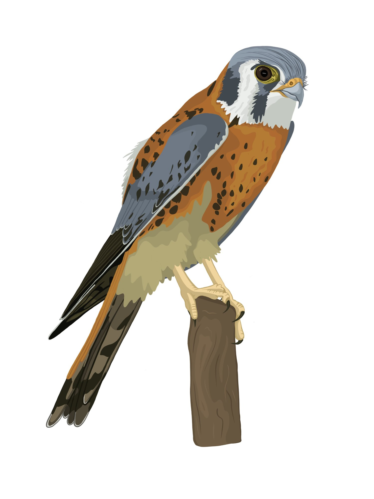

MS Student · Boise State University
Exploring how disease ecology, physiology, and life history interact and shape one another in wild bird populations.

Who I Am
I made my way to research in avian systems through some amazing early opportunities, including surveying breeding Cooper's Hawks in the pine barrens of Wisconsin and Peregrine Falcons on the tundra in Greenland. I completed my B.S. in Biology at the University of Wisconsin–Stevens Point, then worked as a seasonal technician for the Institute for Bird Populations, Intermountain Bird Observatory, and Raptorview Research Institute before spending several years with the University of Arizona, where I worked in the Badyaev and Duckworth Labs on long-running research projects in Missoula, Montana and Tucson, Arizona. It was there that I developed my own research project — assessing network dynamics and temporal trends of avian pox in an urban house finch population — and where my interests in life history and disease ecology really clicked.
I am currently a Master's student in the Heath Lab at Boise State, studying infection dynamics in a partial migrant population of American Kestrels. I want to know how environment and individual characteristics — like whether a bird migrates or stays put — shape who gets infected, how intensely, and whether naturally occurring infections carry measurable costs at any level.
Outside of research, I'm usually either deep in a Brandon Sanderson novel, out on a hike with my dog Darby, or at my local independent movie theater.
Scholarly Work
Active Work
My M.S. research focuses on infection dynamics in a banded, monitored nest box population of American Kestrels in the Treasure Valley of SW Idaho. I'm asking how environment and individual characteristics — including migration strategy — shape infection prevalence and intensity of Haemoproteus, Leucocytozoon, and Plasmodium, and whether naturally occurring infections carry measurable costs. Outcomes tracked include reproductive success, body condition, circulating carotenoids, and relative telomere length across multiple seasons of trapping, blood sampling, and nest monitoring.
As a research assistant and lead banding technician on long-running projects in Missoula, MT and Tucson, AZ, I worked with Western and Mountain Bluebird populations and House Finches across multiple field seasons. Within the Badyaev Lab, I developed an independent project assessing network dynamics and temporal trends of avian pox in an urban house finch population — the work that first crystallized my interests in life history and disease ecology.
Conducted breeding bird surveys and biological sample collection in northwestern Greenland, focusing on seabirds, raptors, and passerines. Work included assisting with emergent insect trap construction, aquatic insect collection, and tundra plant identification — and contributed data to the mercury contamination study currently in review at Environmental Toxicology and Chemistry.
Seasonal field technician work across multiple migration monitoring projects: Golden Eagle migration counts and banding in Montana with Raptorview Research Institute, and diurnal raptor banding and migration counts with Intermountain Bird Observatory as part of a multi-functional fall migration crew.
Willow Flycatcher and North American Beaver surveys in wetland habitats with the Institute for Bird Populations; Cooper's Hawk observation and banding as part of a summer raptor ecology field course at UWSP; and environmental education and outreach with Southern Wisconsin Bird Alliance.
Background
Get in Touch
Always happy to chat about research, birds, or potential collaborations. Don't hesitate to get in touch!